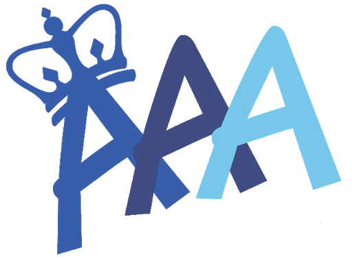
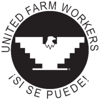
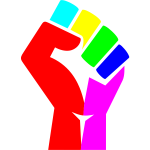
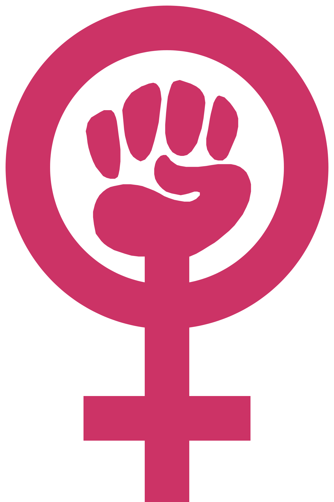
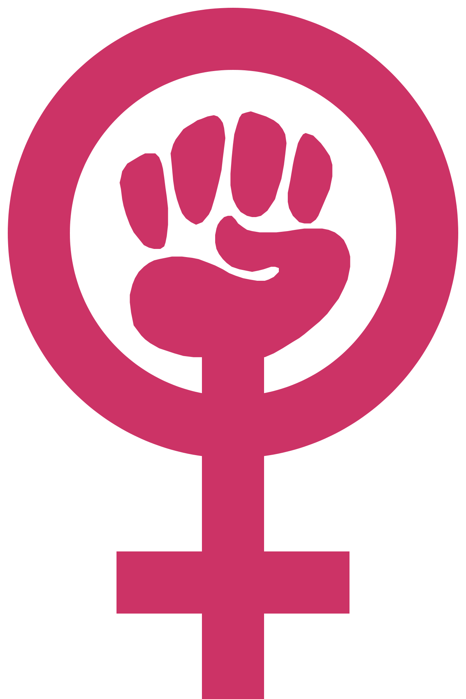

Power Movements of the 1960s & 1970s
Home
  
 



Click on each symbol to learn about that
group's Power Movement of the
1960's & 1970s
Here are the sources for images:
Yellow Power: Columbia.edu Black Power: Wikimedia Commons Brown Power: Wikipedia Rainbow Power: Freesvg Red Power: Muscarelled.wm.edu Pink Power: Wikimedia Commons Green Power: Recycling.com Disability Rights: accessibleiconCredit Source information:
Carrie Shaw
Email:cshaw3@wcpss
Carrie Shaw's website Disability Rights MovementYellow Power: Asian American Movement
In the late 1960s, large numbers of Asian Americans, particularly college students, began to
protest a long history of discrimination. Since the 1850s, racism directed at Asians led to laws
limiting Asian immigration to the U.S., prohibiting marriage between whites and Asians, restricting ownership of property, and enforcing school segregation. In addition to these laws, Japanese Americans were placed in interment camps during World War II because they were
considered a national threat.
Inspired by the “Black Power” and the civil rights movement, Asian Americans organized in the
1960s to change their status in society. They called for Asian studies programs in colleges, the
development of a united Asian‐American community, and an end to racism, especially
negative stereotyping of Asians in the media.
Key Successes:
Shortcomings:
Black Power: SNCC & the Black Panthers
In 1966, two key civil rights organizations‐SNCC and Black Panthers‐embraced Black Power.
Stokely Carmichael was elected chairman of SNCC and proceeded to transform SNCC from an
inter‐racial organization committed to nonviolence and integration into an all‐black
organization that was committed to bringing political and economic power to African
Americans. Carmichael called on blacks to form their own separate political organizations, elect black political leaders, supporting black‐owned businesses, and use violence against
whites if necessary. Carmichael rejected white values of style, adopted the slogan of “Black is
Beautiful,” and supported the wearing of Afro hairstyles and African forms of dress.
The Black Panther Party for Self‐Defense was founded in Oakland, California by activists Huey
Newton and Bobby Seale. The two college‐educated activists were frustrated with the
mainstream civil rights movements emphasis on integration and nonviolence. They argued
that the movement was ineffective, and that it had failed to relieve the poverty and
powerlessness faced by many urban blacks. They founded the organization in response to
what the black community perceived as systematic harassment and brutality by the
predominately white Oakland Police Force. Arming themselves for self‐defense, the Panthers
followed police officers and monitored their actions. The Black Panthers created programs to
help cure the social and economic ills afflicting African Americans in Oakland.
Key Successes:
Shortcomings:
Brown Power: Chicanos, Cesar Chavez, & the United Farm Workers
In the early 1960s, Cesar Chavez began mobilizing migrant farm laborers, particularly Mexican
and Mexican American farm workers, to speak out against decades of exploitation. Chavez was
a former migrant worker who established a union called the United Farm Workers (UFW) and
organized nonviolent protests against the low wages, unsafe working conditions, and long
hours typical in migrant farm labor. He organized boycotts against growers for whom the
laborers worked. By 1970, he had successfully won recognition of the UFW by most of the
growers in California.
Additionally, a wide array of organizations were created the 1960s and 70s that tried to better
the lives of Mexican Americans. These organizations were made up primarily of either youth
on college campuses or those living in urban neighborhoods of the American southwest.
Mexican‐American groups embraced the terms “Chicano” (Mexicano) and “La Raza” (the race)
to emphasize pride in their Mexican heritage.
Key Successes:
Shortcomings:
Rainbow Power: The Gay Liberation Movement
Before the late 1960s, most homosexuals were quiet about their sexual orientation for fear of
losing jobs, friends, and families. In the early 1970s, the gay community became an
increasingly vocal force fighting for civil rights and societal acceptance. The gay liberation
movement started most notably in 1969 when hundreds of gay men and lesbians in New York
City protested decades of police harassment of homosexuals and the arrest of several gay men
after a police raid at the Stonewall Inn (a gay nightclub). These “Stonewall riots” led to a major
shift in attitudes among gay and lesbian Americans, who began to demand equal rights and
societal acceptance.
“Gay Pride” demonstrations and parades were held in major cities, and a newspaper, The
Advocate, promoted gay rights issues. Millions of gays and lesbians “came out of the closet”
and openly declared their sexual preference. The Gay Liberation Front (GLF) worked to
convince Americans that homosexuals are not dangerous sexual deviants but rather people
who deserved equal rights and recognition.
Key Successes:
Shortcomings:
Red Power: The Native American Movement
Inspired by the African American civil rights movement, Native Americans organized the “Red Power” movement to seek their own civil rights. By the 1960s, American Indians had the lowest income, worst health, highest suicide rate, shortest life expectancy and highest unemployment rate of any minority group in the United States. Native American activists tried to draw attention to these conditions by suing the federal government and organizing protest marches to demand Indian autonomy and the return of Indian lands lost because of broken treaties. In 1969, 78 Indians occupied Alcatraz Island in San Francisco Bay; in 1972 the militant American Indian Movement (AIM) occupied the Bureau of Indian Affairs in Washington, DC; and in 1973, 200 armed AIM members took control of Wounded Knee in South Dakota, the site of the 1890 massacre of Indians. In each of these protests, American Indians brought attention to their cause.
Key Successes:
Shortcomings:
Pink Power: The Womens Movement
In 1966, Betty Friedan published The Feminine Mystique which argued that the American home had become a “comfortable concentration camp” for women who were pressured by society to be “happily content in a world of bedroom, kitchen, sex, babies, and home.” The book launched the womens movement in America. Betty Freidan co‐founded the National Organization for Women (NOW), which became an important venue for bringing attention to womens issues. Feminists drew attention to the lack of rights for women and demanded improved education, job opportunities, healthcare, childcare facilities, legal and safe abortion, and shared parenting (greater emphasis on fathers roles in bringing up children). In the 1960s and 1970s, feminists called for the passage of an Equal Rights Amendment (ERA) to the Constitution which would ban discrimination on the basis of sex. Friedan and Gloria Steinem (editor of the feminist‐themed Ms. magazine) actively campaigned for the ERA.
Key Successes:
Shortcomings:
Green Power: The Environmental Movement
In 1962, biologist Rachel Carson published the book Silent Spring that exposed the dangers of using pesticides, specifically DDT, on the environment and the ecosystem. She had become concerned during the 1950s at the rapid increase in pesticides by farmers and government agencies. Reaction to her book led the government to organize an investigation of the industry and sparked the environmental movement. In 1970, the government created the Environmental Protection Agency (EPA) The United States also passed new legislation such as the Clean Water Act, the Clean Air Act, the Endangered Species Act, and the National Environmental Policy Act‐ the foundations for current environmental standards.
Key Successes:
Shortcomings:
Disability Rights Movement
By the 1960s, the civil rights movement began to take shape, and disability advocates saw the opportunity to join forces alongside other minority groups to demand equal treatment, equal access and equal opportunity for people with disabilities. The struggle for disability rights has followed a similar pattern to many other civil rights movements‐challenging negative attitudes and stereotypes, rallying for political and institutional change, and lobbying for the self‐determination of a minority community. In the 1970s, disability rights activists lobbied Congress and marched on Washington to include civil rights language for people with disabilities into the 1972 Rehabilitation Act. In 1973, the Rehabilitation Act was passed, and for the first time in history, civil rights of people with disabilities were protected by law.